阅读指引
商户端围绕「确认车辆状态 → 跟进订单履约 → 处理资金 → 维护配置」展开，先看清订单状态与权限模型，再看后续章节会更顺畅。
订单状态一览
| 状态 | 含义 | 商户可执行的操作 |
|---|---|---|
| 已创建 | 用户已下单，尚未支付（或线下待确认收款） | 确认支付、取消订单、改价 |
| 待绑定 | 已支付，等待到店取车 / 取电池 | 绑定车辆 / 电池、取消订单 |
| 租赁中 | 已取用，租期计时中 | 更换车辆 / 电池、结束订单、改价、退款 |
| 即将到期 | 临近归还时间（由「到期前 N 天」自动流转） | 结束订单、退款、更换车辆 / 电池 |
| 逾期未还 | 超过归还时间 | 结束订单、退款 |
| 违约锁单 | 超期超过「逾期未还 N 天」 | 结束订单、退款 |
| 已完成 | 订单已结束、押金已退 | 查看退款 / 改价记录 |
| 已取消 | 订单已取消，不可恢复 | 仅可查看 |
支付状态一览
| 支付状态 | 说明 |
|---|---|
| 待支付 / 支付中 | 未完成收款；线下支付需商户「确认支付」 |
| 已支付 | 款项已收，可发起退款与改价记录留痕 |
| 退款中 | 退款已提交，等待渠道回执 |
| 部分退款 / 全部退款 | 按退款合计与应付金额比较自动判定 |
截图取自原型演示环境，示例门店、车型、金额与账号均仅作操作示意；实际以你所在门店的实时库存与价格为准。图中金额均以 Rp（印尼盾）计价。
商户端每个入口、按钮都受权限码控制。无权限时点击会提示「无权限」，页面也会自动隐藏对应入口。第 8 章说明权限模型，附录提供完整权限码清单。
第 1 章 登录与系统选择
首次登录需先选择目标系统；之后可在「我的 → 系统设置」中随时切换。
1.1 登录方式
登录页支持三种账号类型，顶部可切换语言（简体中文 / 繁體中文 / English / Bahasa Indonesia）：
- 手机号：选择区号后输入手机号，密码或短信验证码登录（短信登录需先登录「获取验证码」）。
- 邮箱：输入邮箱地址，密码或验证码登录。
- 账号：输入账号 + 密码登录（账号由管理员在「账号管理」中创建）。
任一方式都需勾选底部的用户协议后方可登录。
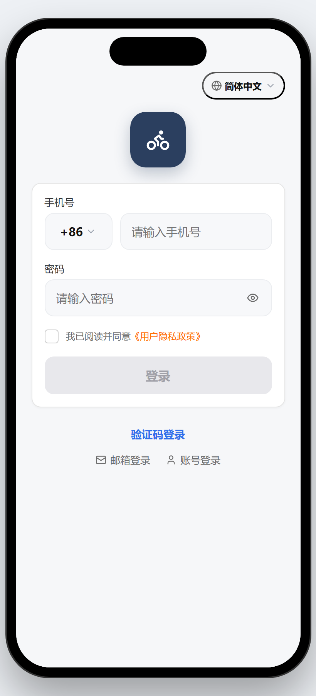
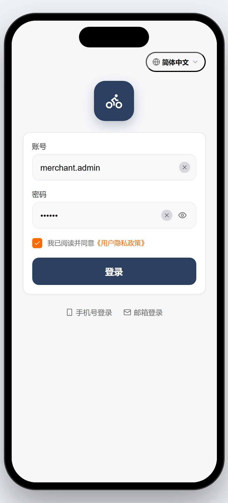
密码输入框右侧的「眼睛」图标可切换密码明文显示；账号或密码错误会在字段下方出现红色错误提示。
1.2 选择系统与切换
首次登录成功后会直接进入 切换系统 页，需选择「换电系统」或「充电系统」进入；从租车商户端也可在「我的 → 系统设置 → 切换系统」再次打开该页。
选择任一系统会跳转到对应的独立系统页面；若在切换页直接返回，「首次登录」场景会退回登录页，设置场景则返回上一页。
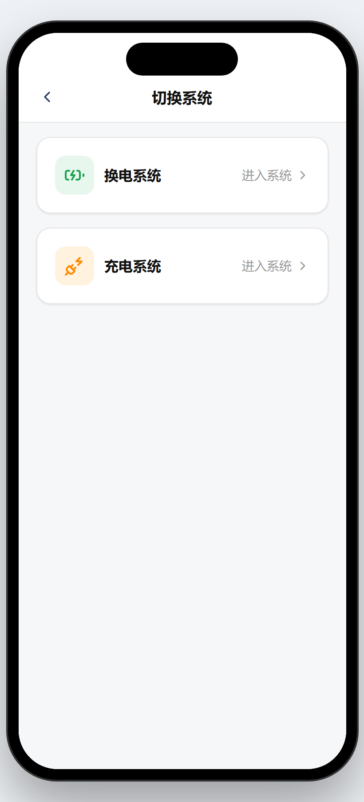
1.3 首页工作台
进入商户端后落在 首页，自上而下依次为：
- 门店名：当前门店名称，可在「我的 → 切换门店」更换。
- 经营数据：营收、订单等核心指标卡片，含环比涨跌标识。
- 车辆运营：车辆状态统计卡片，点击可直接跳转到对应筛选后的车辆列表。
- 订单管理：车辆 / 电池 / 套餐订单与充值订单的快捷入口。
- 最近告警：展示最新告警与待处理数量，点击「全部」进入告警中心。
整页支持下拉刷新。底部导航为 首页 / 车辆 / 电池 / 我的。
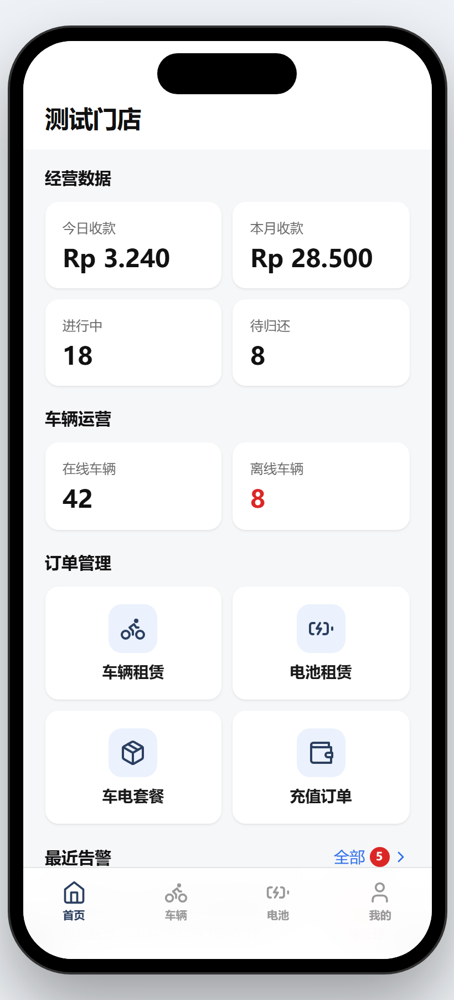
各区块均按权限显示：若账号没有某项权限，对应卡片会整块隐藏；若首页无任何权限，则显示「暂无可访问内容」空态。
第 2 章 告警中心
汇总车辆异常（离线、低电量、震动、越界等），按状态流转处理，全过程留有时间线记录。
2.1 告警列表与筛选
从首页「最近告警 → 全部」或首页告警卡片进入 告警中心。页面提供两级筛选：
- 状态筛选：全部 / 待处理 / 处理中 / 已忽略 / 已关闭（带数量角标），默认停在「待处理」。
- 类型筛选：按告警类型（离线、低电量、震动、越界等）切换。
每条告警展示车架号、告警类型（带等级色标）、最近触发时间与触发次数、当前状态；点击进入详情。
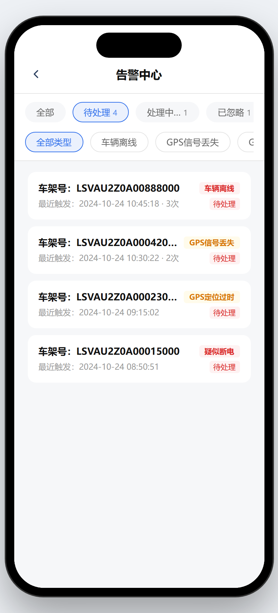
2.2 告警详情
详情页包含三部分：
- 基本信息卡：告警类型、等级（高 / 中 / 低）、状态、车架号、首次 / 最近触发时间、持续时间、触发次数、最后位置、关联订单、忽略原因等。
- 快捷操作：「查看车辆」跳转车辆详情与车控；「一键寻车」向设备下发闪烁鸣笛指令。
- 历史记录：按时间倒序的时间线，记录「告警产生 / 第 N 次触发 / 开始处理 / 已忽略 / 重新打开 / 已关闭」等节点，超过 3 条可「展开全部」。
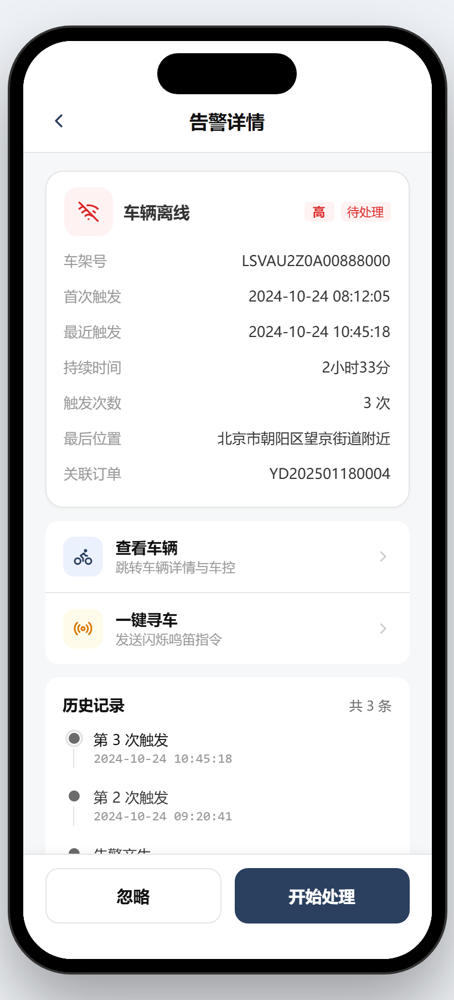
2.3 忽略告警
对待处理 / 处理中的告警，底部点击 忽略，在弹窗中选择忽略原因（误报 / 已现场处理 / 重复告警 / 其他）后确认。忽略后告警进入「已忽略」，可在该状态筛选中查看，并支持 重新打开为待处理。
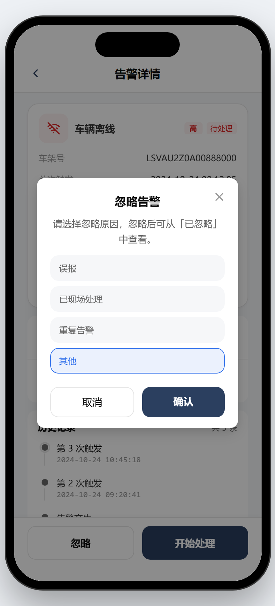
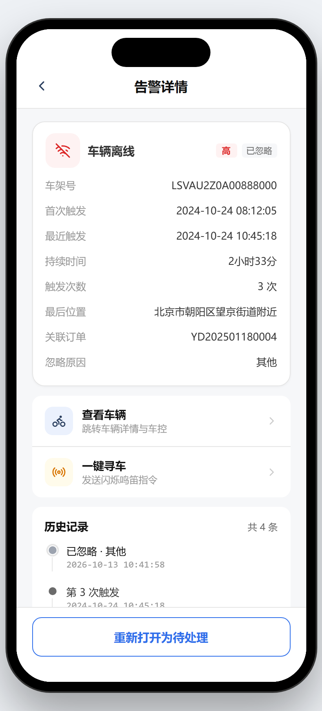
2.4 处理与关闭
待处理告警点击 开始处理 进入「处理中」；处理中告警点击 标记已处理 关闭为「已关闭」（关闭方式记为「人工处理」）。系统在车辆恢复正常后也可能自动关闭，关闭方式记为「自动恢复」。
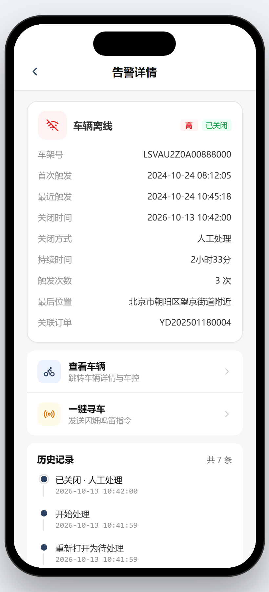
同一车架号 + 同一类型若已有未关闭告警，再次触发只会 累加次数并更新时间，不会新建一条告警。
第 3 章 车辆管理
底部「车辆」Tab 管理门店全部车辆：查看状态、定位、轨迹，远程车控，并维护绑定关系与车辆档案。
3.1 车辆列表与状态
列表按 车架号（VIN） 检索，顶部胶囊按运营状态过滤：全部 / 空闲 / 占用中 / 租用中（带数量）。每条展示车架号、车型、状态、在线状态、电量、定位与最后信号时间。右上角图标可切换到 地图视图，按位置展示车辆分布。
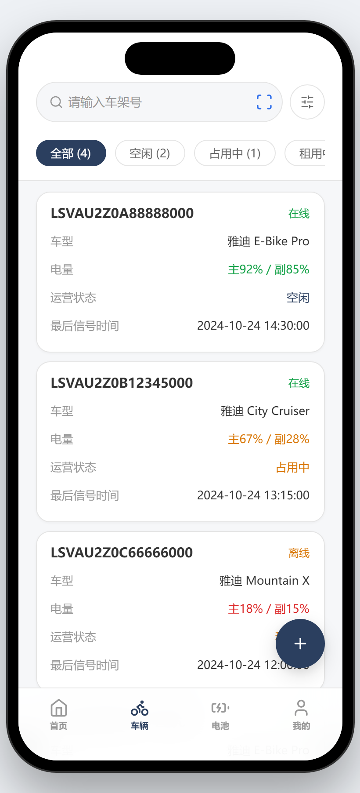
3.2 筛选车辆
点击搜索栏右侧的「筛选」图标打开筛选弹窗，可按三项条件组合筛选，底部「重置 / 确定」生效：
- 车型：按车型名称多选。
- 在线状态：在线 / 离线。
- 是否报失：已报失 / 未报失。
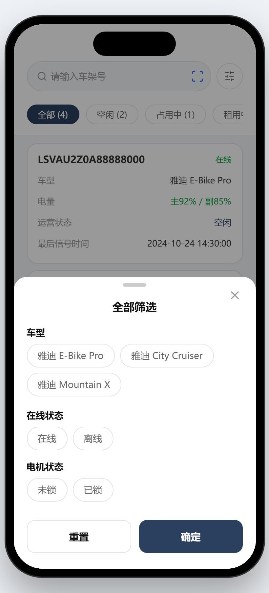
3.3 车辆详情与车控
点击车辆进入详情，上部为位置缩略图（点击查看定位），下部为 车控区，具体按钮按权限显示：
- 长按开锁 / 长按关锁：按住约 1.5 秒触发，进度条满后下发指令，提示「已开锁 / 已关锁」。
- 寻车：向设备发送闪烁鸣笛指令，按钮短暂进入「寻车中…」。
- 设防 / 解除设防：二次确认后切换。
- 锁电机 / 解锁电机：二次确认后切换；锁定后车辆无法骑行。
下方为车辆信息卡（中控编号 / 车型 / 电量主副 / 运营状态 / 最后信号时间）与用户卡（当前绑定用户，未绑定时显示「未绑定用户」）。
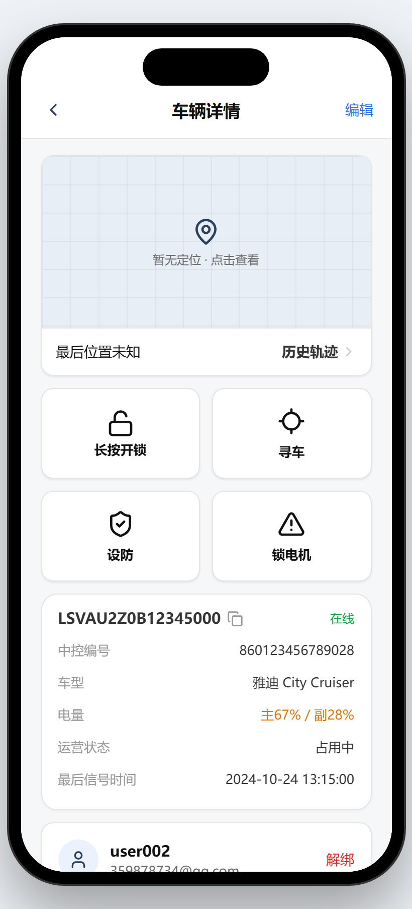
3.4 车辆定位
点击详情顶部位置块或「最后位置」进入 当前位置 页：展示车辆点与用户点、两点连线、直线距离与步行时间，底部支持「寻车」与发起导航。
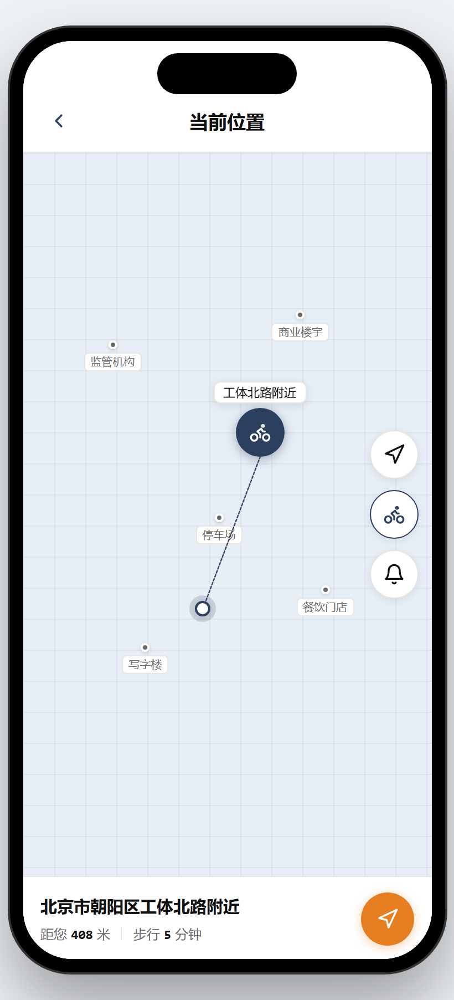
3.5 历史轨迹
从详情位置块右侧「历史轨迹」进入，按时间范围（起始 / 结束时间滚轮选择，精确到分钟）查询，页面回放轨迹折线、起终点与途经 POI。修改时间范围后会自动重新加载轨迹。
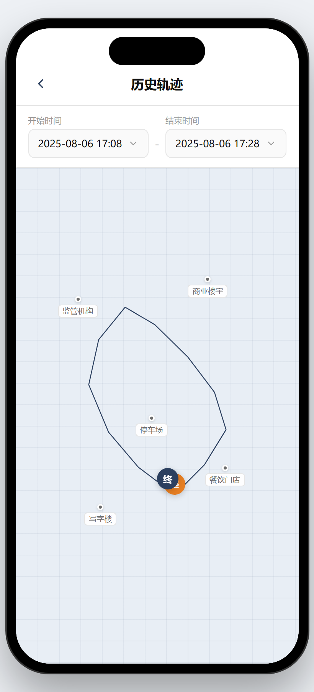
3.6 编辑车辆
详情右上角「编辑」进入编辑页，可修改 中控编号、车型、车牌号。车型决定通信协议（HTTP / TCP），保存后提示「车辆信息已保存」并返回详情。
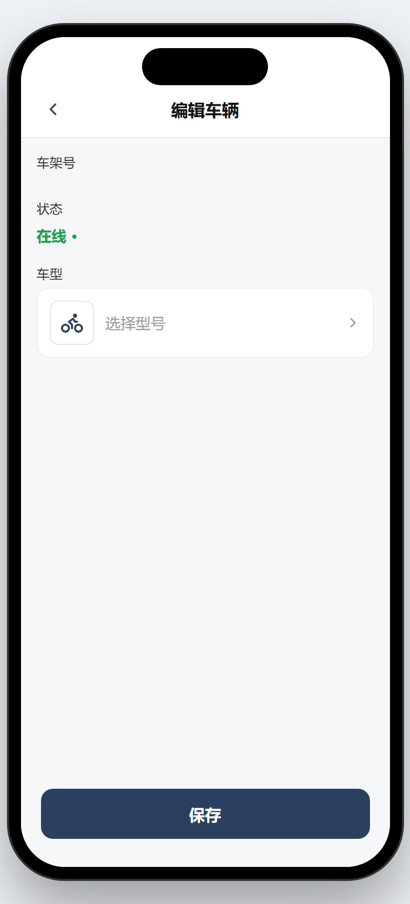
3.7 绑定与解绑用户
在详情「用户卡」右侧操作：
- 绑定：输入账号 / 手机号 / 邮箱搜索用户，选中后「确认绑定」，车辆状态变为「占用中」，提示「绑定成功」。
- 解绑：仅当车辆状态不是「租用中」时可解绑；二次确认后车辆变为「空闲」，可重新绑定。
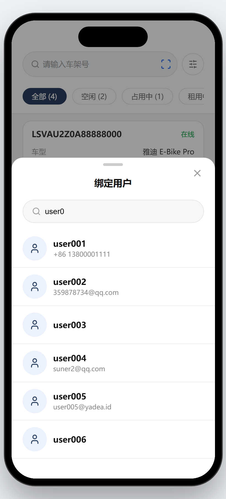
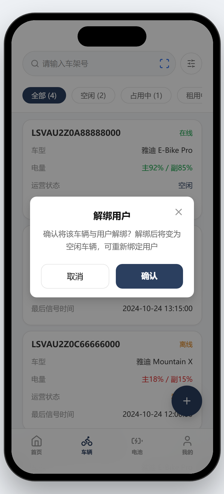
3.8 车辆报失
报失后车辆电机将被锁定、无法正常骑行；已报失车辆再次操作则为 解除报失，解除后电机解锁恢复骑行。
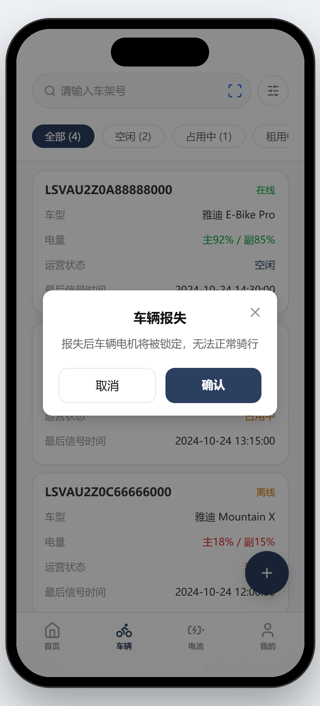
3.9 新增车辆
车辆列表页点击「新增」进入录入页：
- 车型：必选（弹窗选择，含搜索）。
- 车架号：必填，支持「扫码录入」或「手动输入」。
- 中控编号：当所选车型协议为 TCP 时必填。
三项满足后「提交」可用，成功后提示「新增成功」并返回列表。
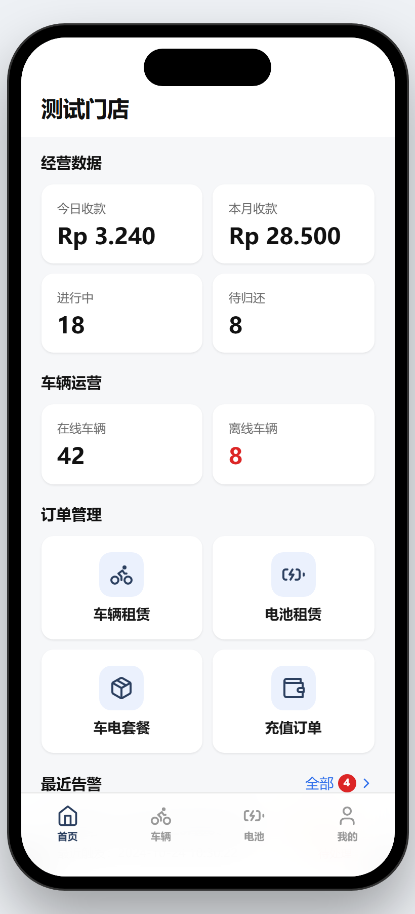
第 4 章 电池管理
底部「电池」Tab 管理门店电池：查看状态与定位，控制放电、报失，并维护电池档案。逻辑与车辆管理基本一致。
4.1 电池列表与状态
列表支持按 电池编号 / 关联车架号 搜索，顶部胶囊按状态过滤：全部 / 空闲 / 占用中 / 租用中。每条展示电池编号、型号、电量（SOC）、在线状态、关联车辆与位置，同样支持地图视图切换。
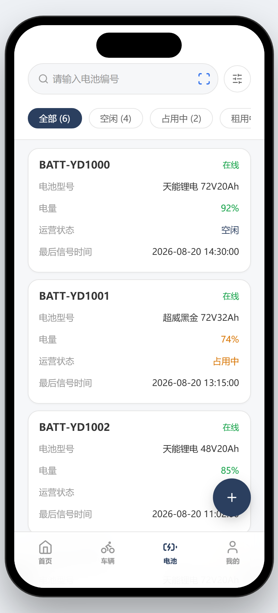
4.2 筛选电池
筛选条件与车辆一致：型号、在线状态、是否报失，底部「重置 / 确定」生效。
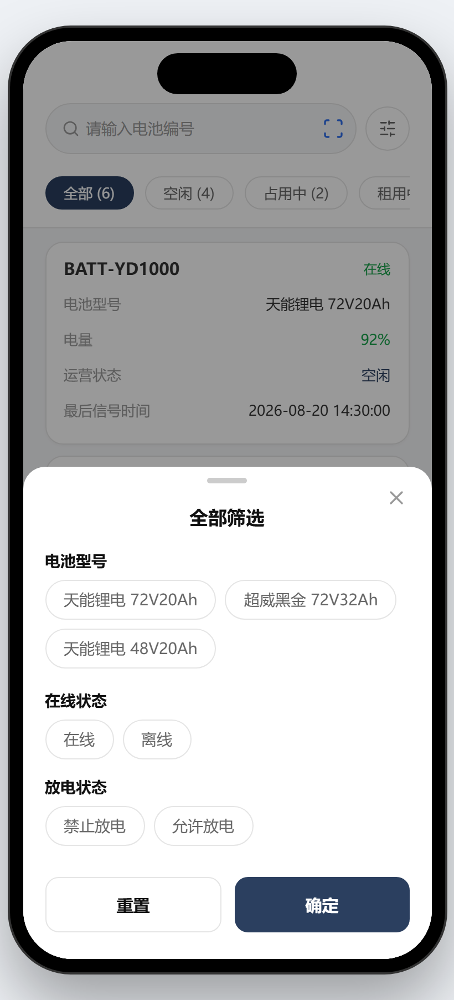
4.3 电池详情
点击电池进入详情：上部为位置缩略图，中部为电池信息卡（型号、电量、状态、关联车辆、最后信号时间），下部为绑定用户卡与操作入口（编辑 / 放电控制 / 报失）。
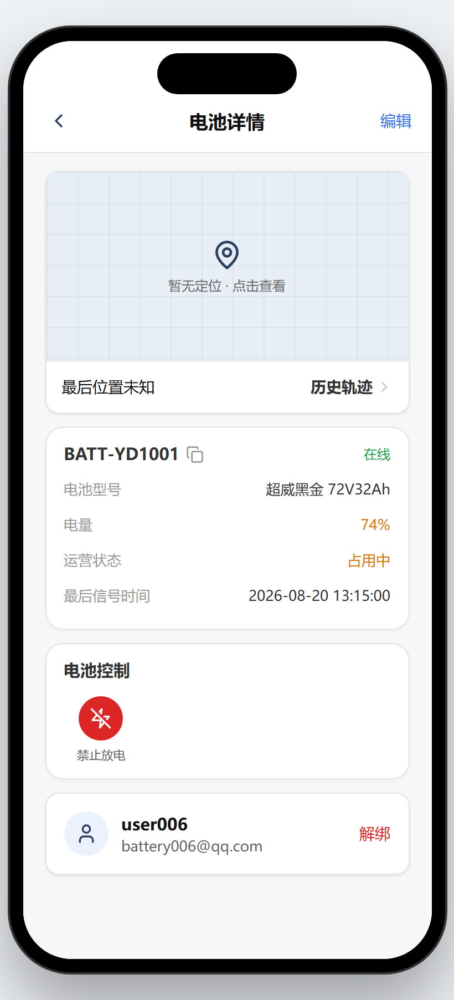
4.4 定位与轨迹
与车辆一致：点击位置块查看 当前位置（电池点 / 用户点、距离、步行时间），点击「历史轨迹」按时间范围回放移动轨迹。
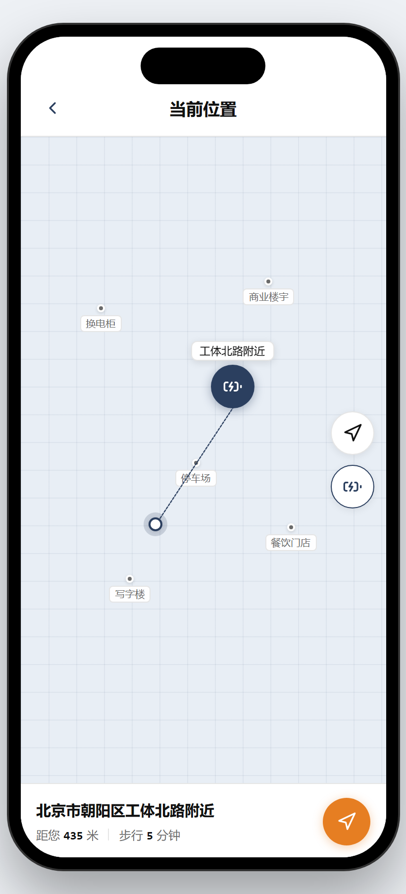
4.5 禁止 / 允许放电
在电池详情点击「放电控制」：当前可放电时弹窗为 禁止放电（禁止后设备无法放电）；已禁止时弹窗为 允许放电（恢复后可正常放电）。二次确认后生效并提示结果。
4.6 电池报失
报失后电池将被锁定、禁止放电；已报失电池再次操作为 解除报失，解除后解锁并恢复放电。
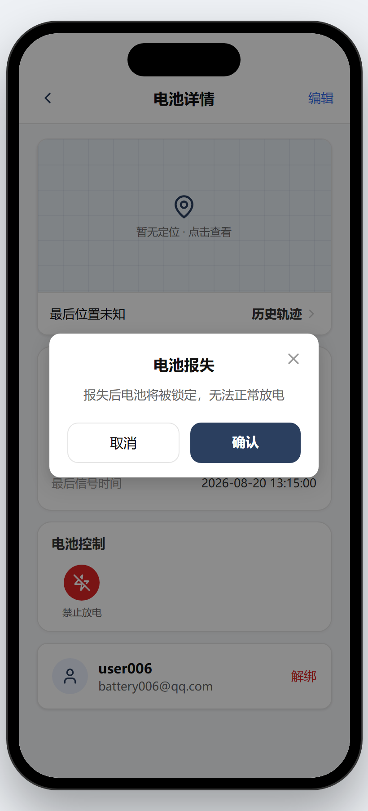
4.7 编辑与新增电池
编辑电池：仅可修改电池型号。保存后提示「电池信息已保存」并返回详情。
新增电池：填写 型号（弹窗选择）与 电池编号（支持扫码 / 手动输入）两项，满足后「提交」可用，成功后提示「新增成功」。
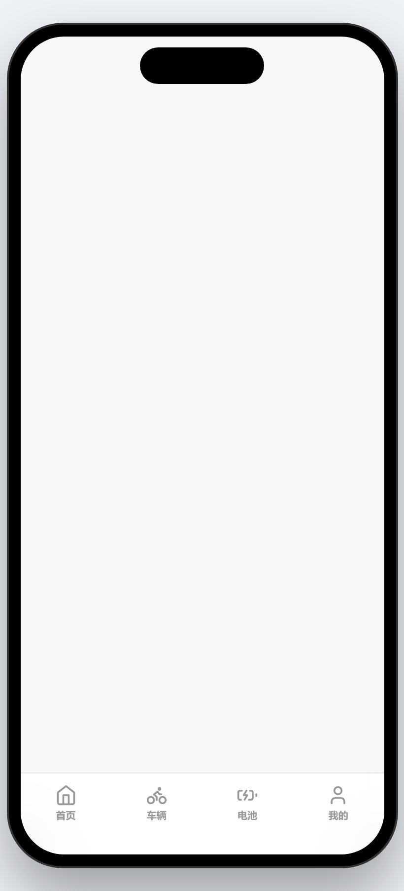
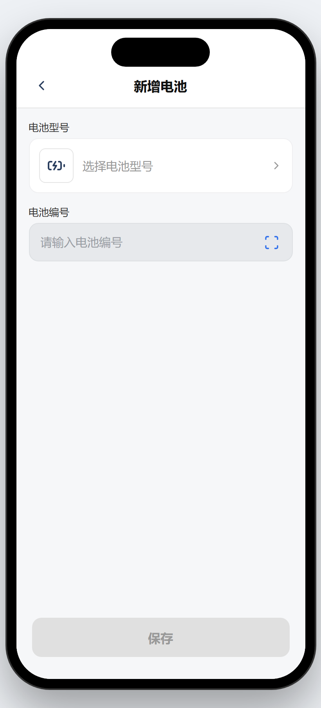
第 5 章 订单管理
商户端最核心的模块：从订单列表进入详情，完成绑定、改价、退款到结束订单的履约闭环。车辆 / 电池 / 套餐三类订单共用同一套详情页。
5.1 订单入口与列表
从首页「订单管理」区进入：车辆租赁 / 电池租赁 / 车电套餐 三个卡片分别进入对应订单列表，充值订单单独一座入口。列表页标题随类型变化（如「车辆订单列表」）。
- 状态胶囊：全部 / 待绑定 / 租赁中 / 即将到期 / 逾期未还（带数量）。
- 搜索：可切换范围——订单编号 / 账号 / 手机号 / 邮箱 / 车架号。
- 卡片字段：订单编号（标题）、所属门店、用户账号、车型 / 电池型号 / 套餐名称、租赁时间、已付金额、待付金额、创建时间。
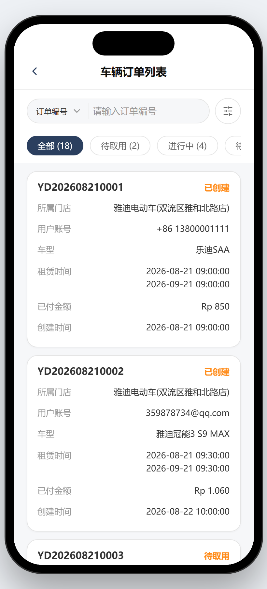
5.2 筛选订单
点击搜索栏右侧「筛选」图标打开筛选弹窗：
- 订单状态：已创建 / 待绑定 / 租赁中 / 即将到期 / 逾期未还 / 违约锁单 / 已完成 / 已取消。
- 支付渠道：2C2P / 线下支付。
- 支付状态：待支付 / 支付中 / 已支付 / 退款中 / 部分退款 / 全部退款。
- 租赁时间：起止日期滚轮（可「清空」为不限）。
底部「重置 / 确定」生效；有筛选条件时筛选图标高亮。
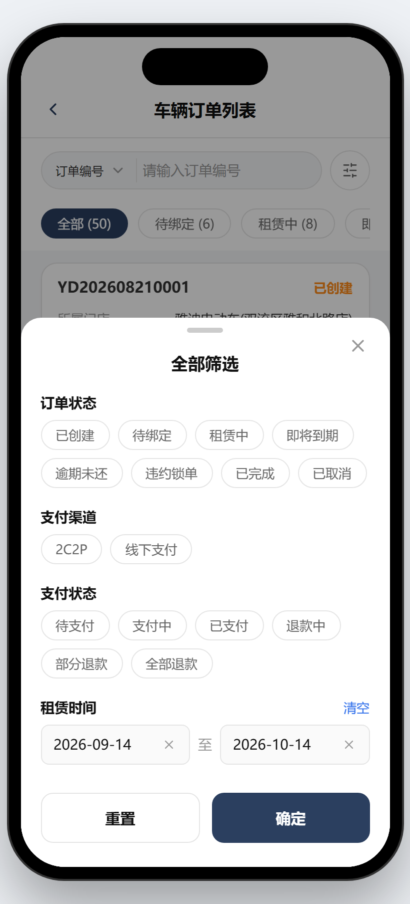
5.3 订单详情
点击任意订单进入详情页，自上而下：
- 基本信息：订单编号（可复制）、所属门店、用户账号（点击进入用户详情）、租赁时间、创建时间、完成 / 取消时间。
- 费用明细：租金 / 押金 / 合计（可展开各渠道金额），右上角箭头进入完整费用明细。
- 退款明细：租金 / 押金 / 合计的已退金额，右上角箭头进入退款记录（需退款列表权限）。
- 实名信息：姓名 / 身份证 / 驾驶证；下方「补充资料」进入订单资料页。
- 车辆信息 / 电池信息：车型 / 型号、车架号 / 电池编号（可点击跳设备详情）、取用时间。
- 自动续租：开关（续租费用从用户钱包自动扣除），按订单状态与权限显示。
- 底部操作栏：主操作按钮 +（线下待支付时）取消订单按钮。
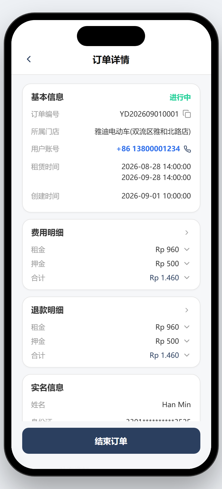
已创建 / 待绑定 → 取消订单；租赁中 / 即将到期 / 逾期未还 / 违约锁单 → 结束订单；已完成且可退 → 退款；线下支付且待支付 → 确认支付（同时出现红色「取消订单」）。
5.4 费用明细
从详情「费用明细」或更多操作进入。列表按行展示 主订单 与各 续租单（手动续租 / 自动续租），每行包含：租赁方案、租赁时间（起止）、租金、押金、合计、支付渠道、支付状态、支付时间。未支付的续租单可执行「立即支付」或「取消续租」（需对应权限，均二次确认）。
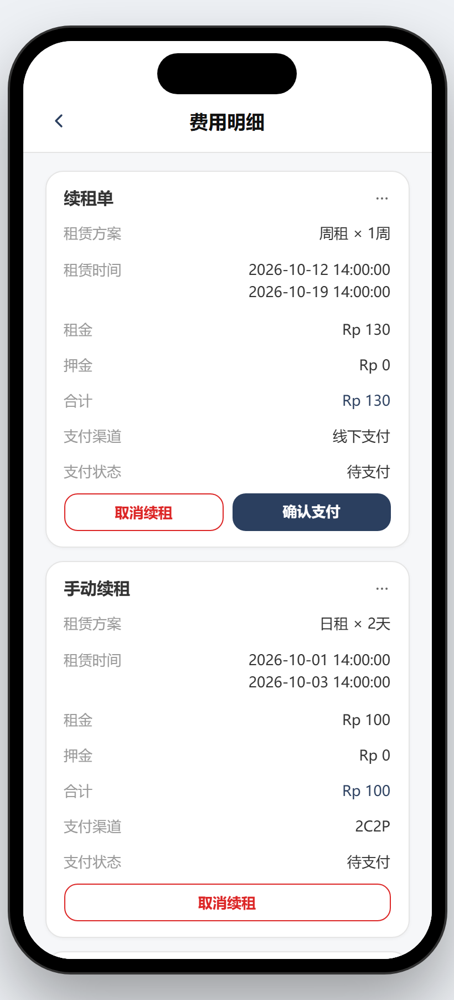
5.5 更多操作
详情底部或费用行右侧「更多操作」打开操作弹窗，按权限与订单状态列出：费用明细 / 改价 / 改价记录 / 退款 / 退款记录。
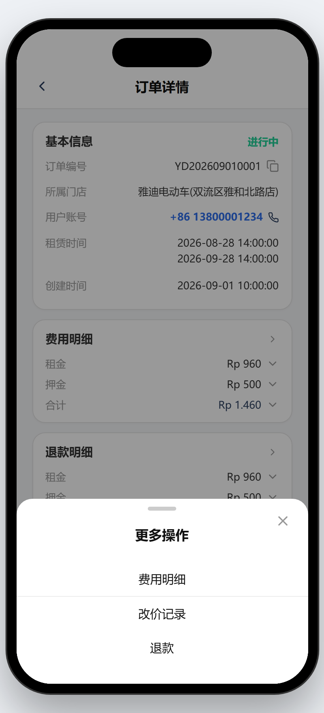
5.6 改价
改价（支付拆分）用于修正订单金额与支付渠道分摊，仅「已创建 + 待支付」的订单可改；已支付的续租单也可单独改价。
- 弹窗顶部切换 租金 / 押金，按 2C2P / 钱包 / 线下支付 分别填写金额。
- 金额允许填 0（该部分整段清零），但 不能为空；填写后实时提示「原金额、各渠道合计、当前增加 / 减少」。
- 备注选填（≤255 字）。确认后弹出二次确认，展示「原租金 / 原押金 → 改价后租金 / 押金」。
- 确认后提示「改价已保存」，并写入一条 改价记录。
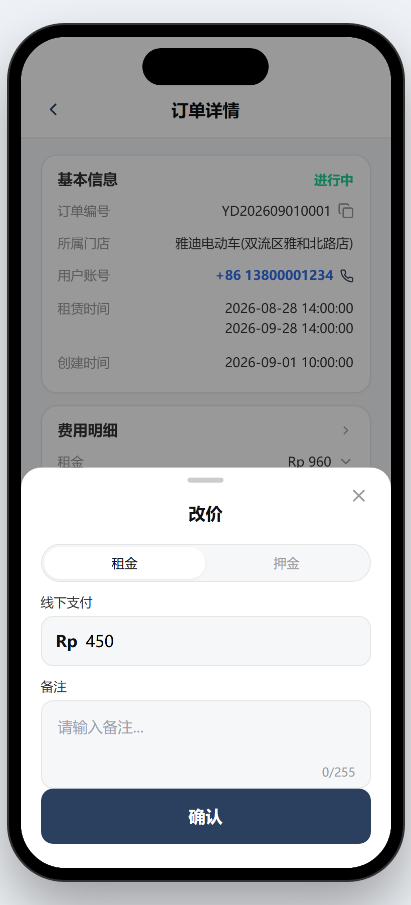
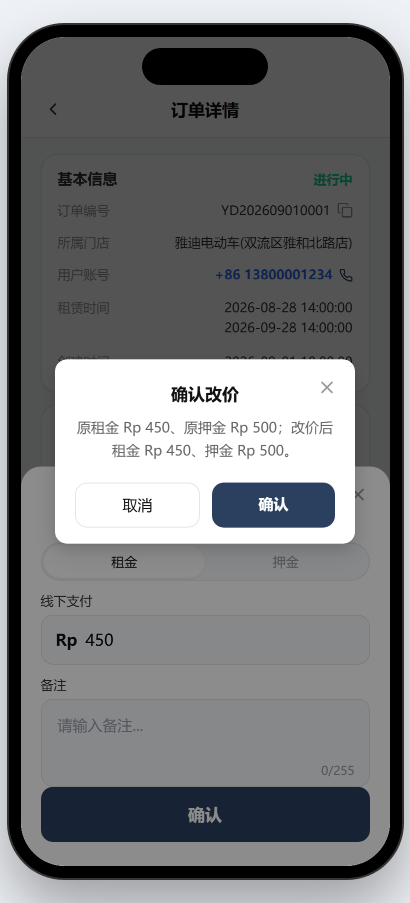
5.7 退款与结束订单
退款与结束订单共用同一弹窗，标题随场景变化：
- 退款：顶部可切换 租金 / 押金，按渠道显示「可退 Rp…」上限，填写退款金额。
- 结束订单：只退 押金，金额预填为可退上限。
- 退款原因必填（≤255 字）。确认后弹出二次确认，展示「确认结束订单？合计退款 Rp…」或「确认执行退款？合计退款 Rp…」。
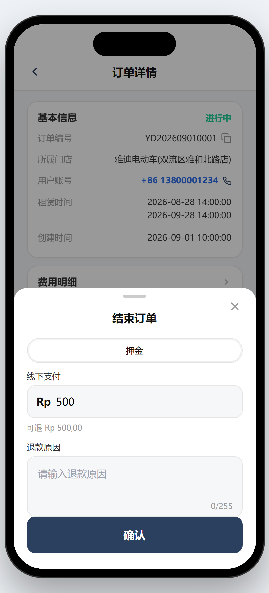
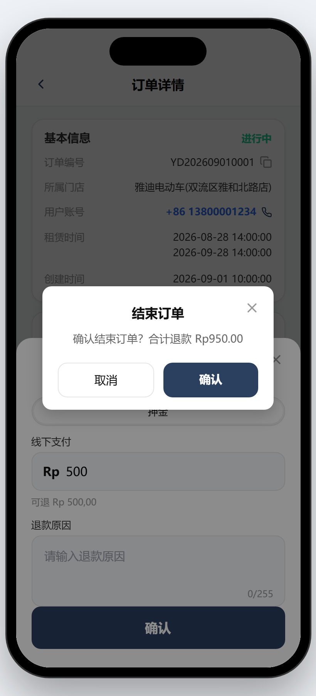
各渠道「可退」上限取自该订单对应部分的已支付渠道分摊金额，超过上限会自动截断为上限值。
5.8 退款记录
按申请时间倒序展示每条退款，字段包括：退款单号 / 申请时间、状态（退款中 / 退款成功 / 退款失败）、租金与押金的退款金额、操作账号、退款来源、退款原因、完成时间。提交退款后记录即时出现在列表（状态先「退款中」，随后更新）。
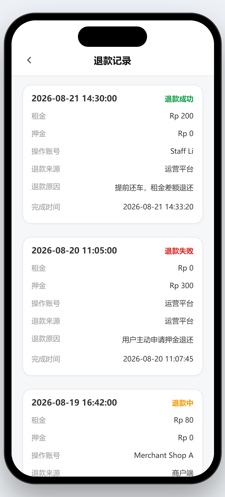
5.9 改价记录
记录每次改价的审计信息：改价单号、操作账号、时间、原因，以及改价前后的租金 / 押金与渠道拆分，便于对账追溯。
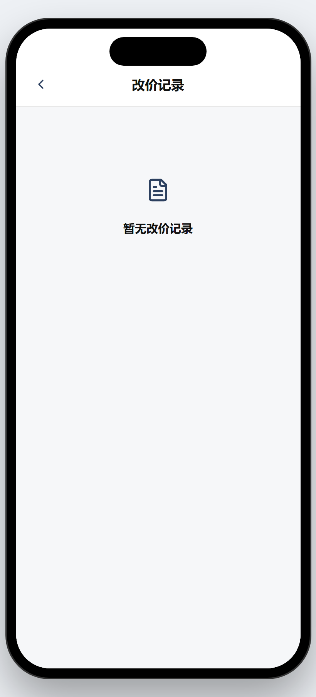
5.10 订单资料
从详情「实名信息 → 补充资料」进入资料页，展示已上传的资料列表（图片可点击查看原图）。点击「添加」打开上传弹窗，可选：
- 拍照上传：身份证 / 驾驶证 / 合同 / 其他 四类快捷入口。
- 文本资料：输入文本内容后确认。
删除资料需二次确认（「确定删除该资料？删除后不可恢复。」）。资料编辑仅在订单「已创建 / 待绑定」状态开放。

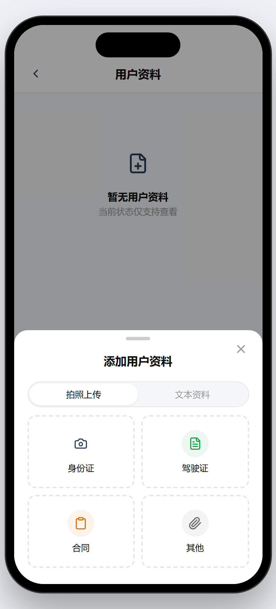
5.11 绑定与更换车辆 / 电池
在详情「车辆信息」「电池信息」卡片右上角操作（按订单状态与权限显示）：
- 待绑定：显示「绑定」入口，为订单绑定指定车辆 / 电池。
- 租赁中 / 即将到期 / 逾期未还 / 违约锁单：显示「更换」入口，替换订单所属车辆 / 电池。
选择弹窗只列出 空闲 的设备，支持编号搜索与扫码；确认后设备状态变为「租用中」，并提示「车辆已绑定 / 更换」或「电池已绑定 / 更换」。
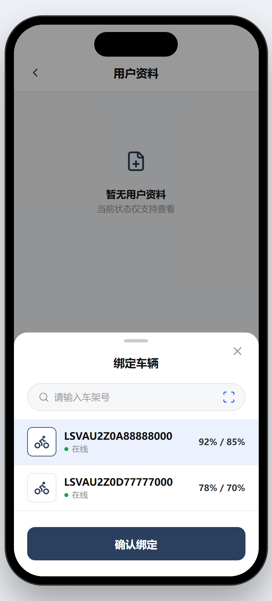
5.12 结束订单全流程
以租赁中订单为例，完整结束流程：
- 详情底部点击 结束订单，打开退款弹窗（默认押金可退额）。
- 确认退款金额与原因，提交后进入二次确认。
- 确认结束：订单状态变为 已完成，支付状态按退款合计与应付金额自动判定为 部分退款 / 全部退款，提示「订单已结束，押金退款中」。
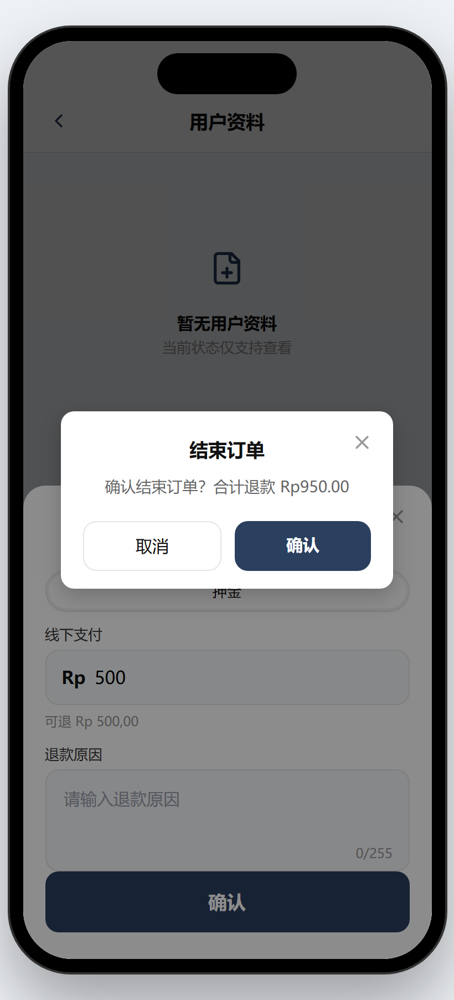
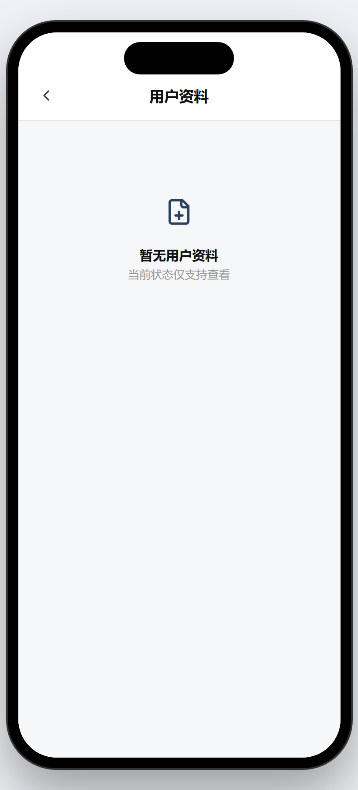
取消订单与结束订单均不可恢复。取消后若原本待支付，支付状态会置为「未支付」；已支付订单结束时会按退款金额写入退款记录。
第 6 章 充值订单
用户钱包充值产生的订单。商户可查看详情、对已支付订单发起退款，或取消未支付的充值订单。
6.1 列表与状态
从首页「充值订单」卡片或订单区进入。顶部状态 tab：全部 / 待支付 / 已取消 / 已支付 / 退款中 / 已退款（带数量）；搜索范围可切换 订单编号 / 账号 / 手机号 / 邮箱。卡片展示订单编号、用户账号、充值金额、赠送金额、支付渠道、支付状态与创建时间。
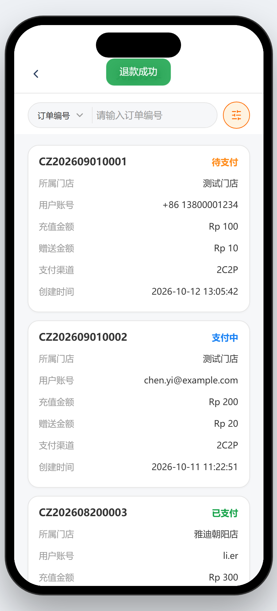
6.2 筛选充值订单
筛选弹窗支持：支付渠道、支付状态（待支付 / 支付中 / 已支付 / 退款中 / 部分退款 / 全部退款 / 已取消，可多选）、充值金额区间、日期范围（默认最近一个月，可清空为不限）。
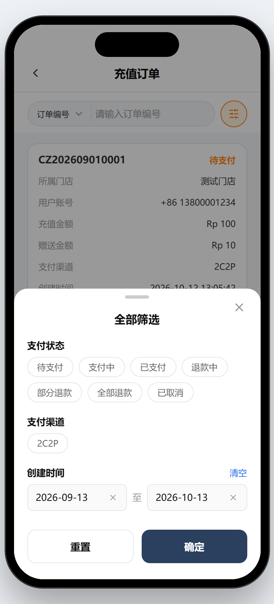
6.3 充值订单详情
详情包含：
- 基本信息：订单编号（可复制）、所属门店、用户账号（点击进入用户详情）、创建时间、支付渠道、支付时间 / 取消时间。
- 充值明细：充值金额、赠送金额。
- 退款明细（退款中 / 部分退款 / 全部退款时显示）：已退充值金额与赠送金额，点击进入退款记录。
- 底部操作：待支付 → 取消订单；已支付 / 部分退款 → 退款。

6.4 退款
对 已支付 / 部分退款 的充值订单点击「退款」：分别填写 充值金额（可退上限为充值金额）与 赠送金额（可退上限为赠送金额），两项至少填一项，超出上限会提示「充值 / 赠送金额超出可退金额」。确认后二次确认提交，订单支付状态变为「退款中」，提示「退款申请已提交」。
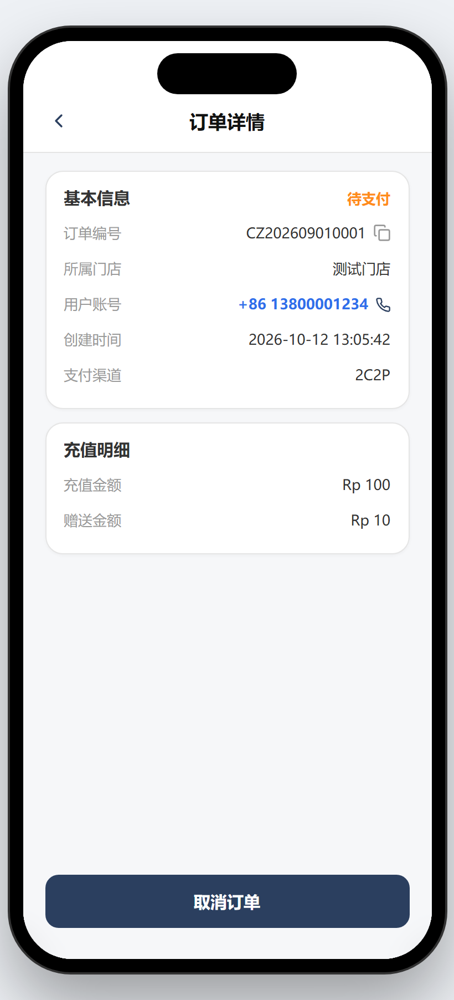
6.5 取消订单
仅 待支付 的充值订单可取消。点击「取消订单」弹出确认（「确定取消该订单？取消后不可恢复」），确认后状态变为「已取消」并记录取消时间，提示「订单已取消」。
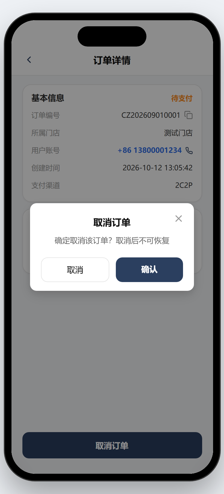
6.6 退款记录
按申请时间展示每条退款，字段包括：申请时间、状态（退款中 / 退款成功 / 退款失败）、充值金额、赠送金额、操作账号、退款来源、退款原因、完成时间。
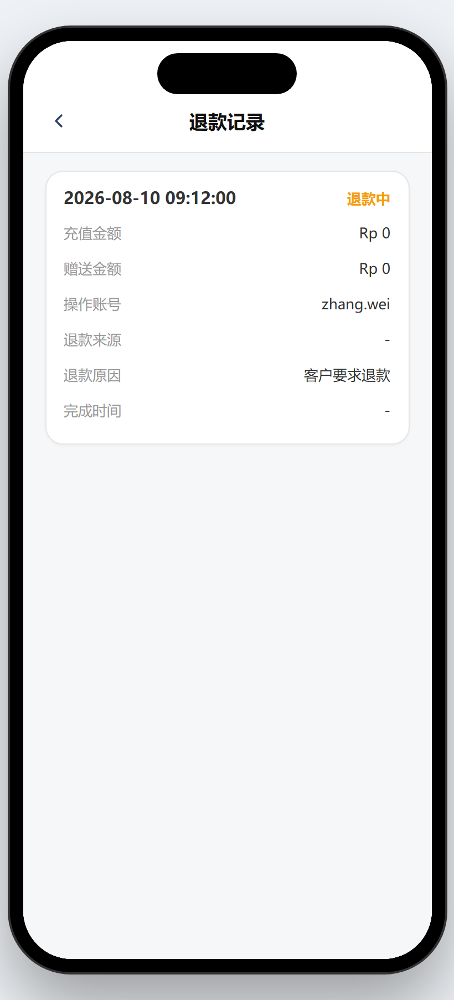
第 7 章 我的 · 门店与配置
底部「我的」Tab 集中了门店切换与全部运营配置：车型 / 电池型号 / 套餐、充值配置、订单配置、客服信息与系统设置。
7.1 我的主页
顶部为当前登录人（姓名 / 手机号）与「个人信息」入口，右上角齿轮进入系统设置。下方菜单按分组排列，且 按权限过滤：
- 切换门店（显示当前门店名）
- 经营管理：车型管理、电池型号管理、套餐管理
- 员工与用户：账号管理、职位管理、用户管理
- 运营配置：订单配置、客服信息、充值配置
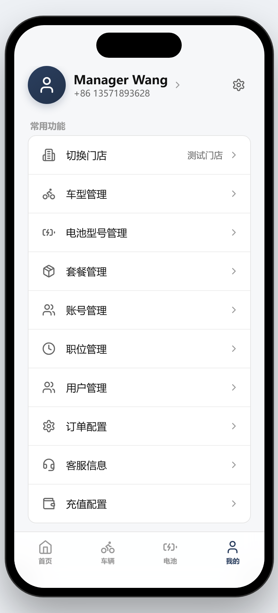
7.2 切换门店
进入 门店列表，当前门店右侧带绿色勾选。点击其他门店即切换，返回并同步更新首页门店名与相关数据。
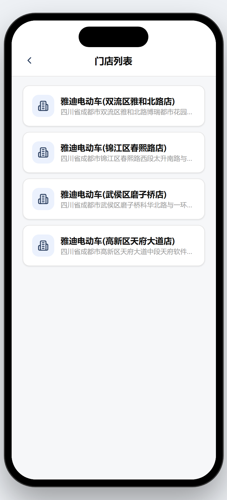
7.3 车型管理
列表展示车型名称、车辆数量、计价方案、月租价格、押金、排序与更新时间，支持名称搜索。点击某车型进入 编辑车型：
- 计价方案：时租 / 日租 / 周租 / 月租多选，勾选后必须填写对应价格。
- 押金：必填。
- 排序：1–99 的整数。
校验规则：勾选方案的单价需为「0 或正数，小数最多两位」，押金必填且同规则，排序超范围会提示错误。
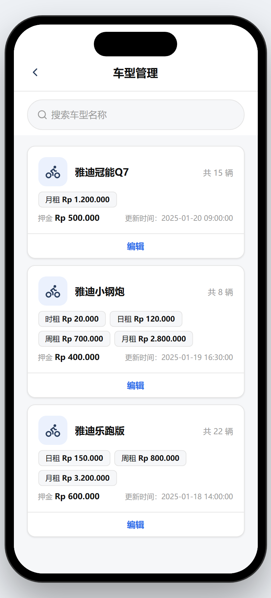
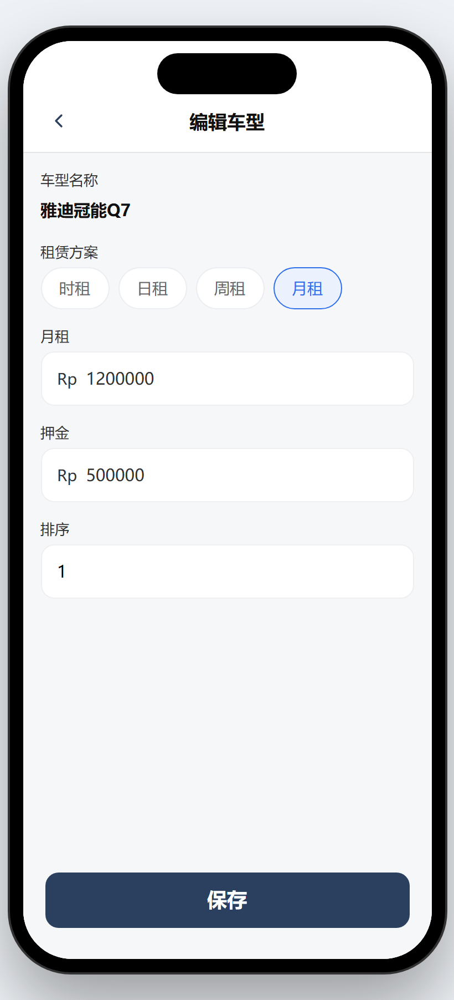
7.4 电池型号管理
与车型管理同构：列表展示电池型号、数量、计价方案、价格、押金与更新时间；编辑页可调整计价方案、价格、押金与排序，校验规则与车型一致。
7.5 套餐管理
套餐是「车辆 + 电池」的组合商品。列表展示套餐名、车辆型号 + 电池型号、主图、月租价格、押金、上架状态与更新时间。新增 / 编辑套餐字段：
- 套餐名称（新增必填）、车辆型号、电池型号（均弹窗选择）。
- 套餐主图（必填）、缩略图。
- 计价方案、押金、排序（1–99）、上架状态、备注。
7.6 充值配置
顶部两个总开关：充值功能、允许自定义金额（关闭充值功能后自定义开关禁用）。下方为充值档位列表，每条展示充值金额、赠送金额、状态（启用 / 禁用）与备注。
新增 / 编辑充值配置：填写充值金额、赠送金额、启用状态与备注。列表项可直接「编辑」或「删除」（删除需二次确认「确定删除该充值配置？删除后不可恢复。」）。
7.7 订单配置
订单规则集中配置，分三部分：
- 订单状态流转：到期前
N天（1–365）自动变更为「即将到期」；逾期未还N天（1–365）自动变更为「违约锁单」；可选「自动锁车」「自动锁电池」。 - 订单续租：允许订单续租总开关 → 允许订单类型（车辆租赁 / 电池租赁 / 车电套餐）；允许手动续租开关 → 允许续租的订单状态（租赁中 / 即将到期 / 逾期未还 / 违约锁单）；允许自动续租开关 → 时租订单到期前
N分钟（0–60）自动续租、其它订单到期前N天（0–30）自动续租、连续扣款失败N次（0–10）后关闭自动续租。 - 实名信息：必须上传实名信息开关（开启后用户下单须选择实名信息）。
右上角「保存」提交；校验失败会在对应字段下方给出提示，续租类型 / 状态未选会提示「请至少选择一种…」。
7.8 客服信息
列表展示客服号码、服务时段与备注。新增 / 编辑客服：选择 区号 并填写号码，设置 服务开始 / 结束时间（时、分滚轮），填写备注。校验要求开始时间不能晚于或等于结束时间。删除需二次确认。
7.9 系统设置
系统设置包含：
- 切换语言：简体中文 / 繁體中文（中國香港）/ English / Bahasa Indonesia。
- 切换系统：换电系统 / 充电系统。
- 当前版本：显示版本号（V1.3.8），点击检查更新。
- 退出登录：底部按钮，二次确认「确定要退出当前账号吗？退出后需重新登录。」
第 8 章 组织与权限
管理门店的登录账号、职位与权限，同时可查看 C 端用户的资料、钱包与流水。
8.1 账号管理
「我的 → 账号管理」列出全部登录账号：账号、姓名、手机号、邮箱、职位角色、备注、状态（启用 / 禁用）与创建时间，支持关键字搜索。右上角「新增」创建账号；点击账号进入详情，可编辑或切换启用 / 禁用（禁用后该账号将无法登录，需二次确认）。
8.2 新增账号
新增账号分两步逻辑：
- 录入账号：输入账号后离开输入框，系统会查询该账号是否已存在。不存在则进入可编辑状态（NEW）；已存在则自动带出该账号资料，姓名 / 手机号 / 邮箱 / 备注等基础字段变为 禁用（EXIST）。
- 填写基础信息：姓名、区号 + 手机号、邮箱、备注、职位角色（可多选）。
校验规则：账号须以字母开头、长度 4–20 位；姓名必填且不超过 64 位；手机号仅支持数字；邮箱格式正确且不超过 255 位；备注不超过 255 位；职位至少选一项。
提交成功后弹出 账号创建成功 卡片，展示账号与 系统生成的初始密码（均支持一键复制），请线下安全转交使用人。
8.3 职位管理
「职位管理」列出职位名称、上级职位、门店级别、备注与创建时间，呈树形层级（如 店长 → 管理员 → 员工）。
点击职位进入 职位详情，内含权限树（仪表盘 / 订单管理两组，含「查看营收数据、查看车辆运营、查看订单列表、查看订单详情、取消订单、结束订单、退款处理」等勾选项）。新增 / 编辑职位可设置名称、上级职位、备注并勾选权限；删除职位需二次确认。
8.4 用户管理
「用户管理」列出 C 端用户：账号、状态（正常 / 注销）、手机号、邮箱、昵称、注册时间。搜索范围可切换 账号 / 手机号 / 邮箱，状态 tab 为 全部 / 正常 / 注销（带数量）。
8.5 用户详情与钱包
点击用户进入详情：上部为用户资料（账号 / 手机号 / 邮箱 / 昵称 / 状态）；下部为 钱包 区块，展示充值余额、赠送余额与冻结金额，并列出该用户的订单、绑定车辆与电池，可直接解绑（解绑后设备变为空闲）。
8.6 钱包调账
钱包区「更多操作」打开操作面板，选择调账后填写 类型（增加 / 扣减）、金额 与 备注。规则：金额必填且大于 0；扣减金额不能超过赠送余额。确认后提示「赠送余额调账成功」。流水页可按类型（充值 / 充值退款 / 订单消费 / 订单退款 / 赠送 / 扣减）筛选，展示每笔的变动金额、变动后余额、关联单号、操作人与备注。
8.7 权限演示面板
原型底部提供 权限演示面板：按权限组展示全部权限码（chip），可逐个开关，或整组全选 / 全不选。面板会显示当前页面对应的权限组与「页面路径」，「复制」按钮可一键复制「权限码 + 页面路径」，便于联调与排查。关闭某个底部 Tab 的权限时，页面会自动跳转到仍可访问的 Tab。
该面板仅存在于原型演示环境，用于验证权限效果；正式环境权限由后台角色统一配置。完整权限码清单见附录。
第 9 章 常见问题
汇总日常运营中最常遇到的疑问与处理方式。
Q1 登录后为什么直接进入「切换系统」页？
首次登录时会强制选择目标系统（换电 / 充电）。选择任一系统即进入对应系统；若要回到本端继续操作，可在「我的 → 系统设置 → 切换系统」重新打开该页并返回。
Q2 点击某个入口提示「无权限」怎么办？
该入口对应的权限码未授予当前账号。请联系管理员在职位或账号权限中开通；也可用底部的权限演示面板打开对应权限码来自查。无权限时页面上的按钮会被隐藏，而不是报错。
Q3 订单详情里为什么没有「改价」按钮？
改价只对 「已创建 + 待支付」 的订单开放；若订单已支付，只能通过退款调整。此外还需具备「改价」相关权限。
Q4 「结束订单」和「退款」有什么区别？
结束订单用于终结一笔租赁中的租用，通常只退押金并结束租期；退款是对已支付款项的部分返还，可分别针对租金与押金填写金额。两者都会写退款记录，并自动判定支付状态为部分退款或全部退款。
Q5 为什么绑定车辆时提示「暂无空闲车辆可选」？
绑定 / 更换只列出状态为「空闲」的车辆或电池。若列表为空，说明当前没有空闲设备，请先在车辆 / 电池模块解绑或等待订单结束后再来绑定。
Q6 车辆报失后还能被租用吗？
不能。报失后车辆电机被锁定、无法正常骑行。需要恢复时在车辆详情再次操作「解除报失」，电机解锁后即可恢复。电池报失同样会锁定并禁止放电。
Q7 同一条告警为什么次数一直在增加？
这是设计如此：同一车架号 + 同一告警类型在未关闭前，再次触发只累加「触发次数」并更新最近触发时间，不会重复生成新条目，避免告警刷屏。
Q8 充值订单的「充值金额」和「赠送金额」是分开退的吗？
是。退款时分别填写，两笔各自受「可退上限」约束（充值金额上限为充值金额，赠送金额上限为赠送金额），至少填写一项；退款记录中也会分列展示。
Q9 订单配置里的天数改动会立刻生效吗？
保存后即作为规则生效：到期前 N 天自动转「即将到期」、逾期未还 N 天自动转「违约锁单」，自动续租的提前时间（时租订单按分钟、其它订单按天）与扣款失败阈值同理。请谨慎调整，避免影响存量订单。
Q10 新增账号后初始密码在哪里看？
提交成功后系统会弹出「账号创建成功」卡片，显示账号与系统生成的初始密码，两者均可一键复制。该卡片关闭后不再显示，请及时保存并交付使用人。
附录 规则速查
把散落在各页面的关键规则与权限码集中成一页，便于快速查阅。
入口与显示条件
| 功能 | 入口位置 | 显示 / 可用条件 |
|---|---|---|
| 告警中心 | 首页「最近告警 → 全部」 | 具备告警列表权限 |
| 车辆 / 电池定位与轨迹 | 设备详情位置块 / 历史轨迹 | 进入设备详情后始终可用 |
| 绑定 / 解绑用户 | 设备详情用户卡 | 解绑仅限状态非「租用中」 |
| 绑定 / 更换车辆 · 电池 | 订单详情设备卡片右上角 | 待绑定可绑定；租赁中及之后可更换 |
| 改价 | 订单详情更多操作 | 已创建且待支付；需改价权限 |
| 退款 | 订单详情更多操作 / 充值订单详情 | 订单已支付或部分退款 |
| 结束订单 | 订单详情底部主按钮 | 租赁中 / 即将到期 / 逾期未还 / 违约锁单 |
| 确认支付 | 订单详情底部主按钮 | 线下支付且待支付 |
| 取消订单 | 订单详情主 / 危险按钮 | 已创建 / 待绑定；充值订单限待支付 |
| 订单资料 | 订单详情实名信息 → 补充资料 | 已创建 / 待绑定可编辑 |
关键规则
| 项目 | 规则 |
|---|---|
| 长按开关锁 | 按住约 1.5 秒，进度条满后下发指令 |
| 新增车辆 | 车型必选、车架号必填；协议为 TCP 时中控编号必填 |
| 改价金额 | 允许为 0，不能为空；各渠道合计即新金额 |
| 退款金额 | 各渠道填写不超过「可退」上限，超出自动截断 |
| 退款 / 结束判定 | 退款合计 ≥ 应付金额判「全部退款」，否则「部分退款」 |
| 告警去重 | 同车同类型未关闭时只累加次数，不新建 |
| 账号格式 | 字母开头，长度 4–20 位（字母 / 数字 / 下划线） |
| 钱包调账 | 扣减金额不能超过赠送余额 |
| 客服时段 | 开始时间不能晚于或等于结束时间 |
| 订单状态自动流转 | 到期前 N 天 → 即将到期；逾期未还 N 天 → 违约锁单（可在订单配置调整） |
权限码清单
| 分组 | 权限码（中文名） |
|---|---|
| 首页 | home.view 首页总览；home.stats.business 经营数据看板；home.stats.vehicle 车辆运营统计 |
| 告警中心 | alarm.list 告警列表；alarm.detail 告警详情 |
| 车辆管理 | vehicle.list 车辆列表；vehicle.detail 车辆详情；vehicle.add 新增车辆；vehicle.edit 编辑车辆；vehicle.command.lock 开关锁；vehicle.command.find_car 寻车鸣笛；vehicle.command.arm 设防；vehicle.command.motor_lock 锁电机 |
| 电池管理 | battery.list 电池列表；battery.detail 电池详情；battery.add 新增电池；battery.edit 编辑电池；battery.discharge 电池放电 |
| 车辆订单 | order.list 订单列表；order.detail 订单详情 |
| 电池订单 | order.battery.list 订单列表；order.battery.detail 订单详情 |
| 套餐订单 | order.package.list 订单列表；order.package.detail 订单详情 |
| 充值订单 | recharge_order.list 订单列表；recharge_order.detail 订单详情 |
| 用户管理 | user.list 用户列表；user.detail 用户详情 |
| 系统配置 | model.list 车型列表；model.edit 编辑车型；batt_model.list 电池型号列表；batt_model.edit 编辑电池型号；package.list 套餐列表；package.add 新增套餐；package.edit 编辑套餐；recharge.list 充值配置列表；recharge.add 新增充值配置；recharge.edit 编辑充值配置；recharge.delete 删除充值配置 |
| 账号与职位 | account.list 账号列表；account.detail 账号详情；account.add 新增账号；account.edit 编辑账号；account.status.disable 禁用账号；account.status.enable 启用账号；position.list 职位列表；position.detail 职位详情；position.add 新增职位；position.edit 编辑职位；position.delete 删除职位 |
| 客服与配置 | cs_info.list 客服列表；cs_info.add 新增客服；cs_info.edit 编辑客服；cs_info.delete 删除客服；order_config.detail 订单配置；order_config.edit 编辑配置 |
每日开工先看首页「最近告警」与「车辆运营」，处理完待处理告警再看订单；结束订单前先与用户确认归还状态，退款金额与原因务必如实填写，以便退款记录可追溯。